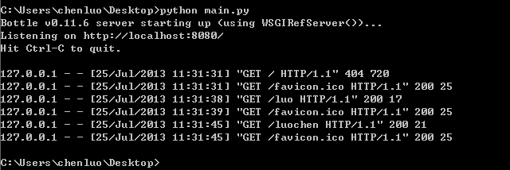
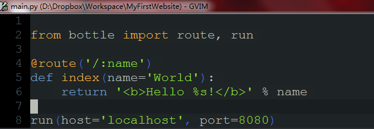

<h1 id="bottleweb">用bottle框架搭建web服务笔记</h1>

<ol>
<li>安装python (我安装的是<a href="http://www.python.org/download/">python3.3.2</a>)</li>
<li>安装virtualenv (<a href="http://pypi.python.org/pypi/virtualenv#downloads">virtualenv-1.10</a>)</li>
<li>配置虚拟环境,将环境变量指向虚拟环境</li>
<li>安装bottle (<a href="https://pypi.python.org/pypi/bottle/0.11.6">bottle-0.11.6</a>)</li>
<li>编写main.py</li>
<li><p>在服务器端运行main.py</p>

<blockquote>
  <p></p>
</blockquote></li>
<li><p>在本地访问服务器相应端口,尝试用不同的get参数访问</p>

<blockquote>
  <p></p>
</blockquote></li>
</ol>
